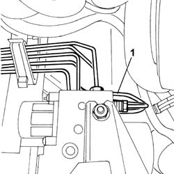
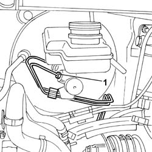
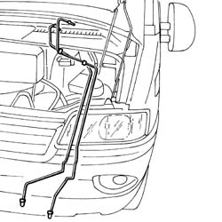

3340B52 PUMP/CENTRAL OBS PIPE - R R
- Path
- Procedures > 33 BRAKING SYSTEM > 3340 ANTI-LOCK BRAKE SYSTEM (ABS) > 3340B ABS SYSTEM PIPES > 3340B52 PUMP/CENTRAL OBS PIPE - R R
- Kind
- repair procedure (removal / refitting; the operation number is the code)
- Applies to
- all engines; all production periods
- Interactive page
- https://sloeber94.github.io/elrnDB-fDct/en/#/244001138
Applies to: all engines; all production periods
 Removing
Removing
 Refitting
Refitting- Position the vehicle on the lift.
- Remove the protective cap from the bleed valve on the rear brake caliper.
- Connect the recovery device (pipe and reservoir) to the rear brake caliper bleed valve.
- Operate the brake pedal until the brake/clutch reservoir is drained.
Op. 1048A21 FILTER INPUT SLEEVE - R R
Op. 1048A10 AIR CLEANER FILTERING ELEMENT - REPLACE
Op. 7055B54 UNDER-ENGINE GUARD - R R
- Disconnect the negative battery terminal.
1. Disconnect the electrical connection for the ABS control unit.
 | Description | Connector |
|---|---|---|
1 | ABS control unit | M050 |
2. Undo the connectors for the rigid pipes on the ABS control unit.

Applies to: all engines; all production periods
- Release the two rigid pipes from the master cylinder to the ABS hydraulic control unit from the retaining springs.
- Release the two pipes for the additional heater from the spring.
- Lower the lift.
Op. 1040A30 OIL SEAL COVER, FLY WHEEL SIDE - R + R AND REPLACE SEALS
1. Undo the two connectors for the rigid pipes on the brake pump.

Applies to: all engines; all production periods
- Release the two rigid pipes from the retaining springs.
1. Remove the rigid pipes from the master cylinder to the ABS hydraulic control unit.

Applies to: all engines; all production periods
Refitting
Removing- Check that the intermediate flexible pipe to the rear brakes is not damaged.
- Fit the rigid pipes from the pump master cylinder to the ABS hydraulic control unit.
- Screw in the connectors for the rigid pipes from the master cylinder to the ABS hydraulic control unit without tightening them to torque.
- Attach the rigid pipes to the springs.
- Attach the pipes for the additional heater to the retaining springs.
- Tighten the two connectors for the rigid pipes from the pump master cylinder to the ABS hydraulic control unit.
 | Value - daNm | Fastening | Component | Ø |
|---|---|---|---|---|
. | (ABS hydraulic control unit ) 1.4 | Connector | PIPE FROM PUMP TO HYDRAULIC CONTROL UNIT | M10 |
| Value - daNm | Fastening | Component | Ø |
|---|---|---|---|---|
. | (ABS hydraulic control unit ) 1.4 | Connector | PIPE FROM PUMP TO HYDRAULIC CONTROL UNIT | M12 |
- Lower the lift.
- Fasten the connectors for the rigid pipes from the master cylinder to the ABS hydraulic control unit to the master cylinder.
| Value - daNm | Fastening | Component | Ø |
|---|---|---|---|---|
. | (Master cylinder) 1.4 | Connector | PIPE FROM PUMP TO HYDRAULIC CONTROL UNIT | M10 |
- Connect the electrical connection for the ABS control unit.
| Description | Connector |
|---|---|---|
. | ABS control unit | M050 |
- Connect the negative battery terminal.
Op. 0010T65 HYDRAULIC BRAKE SYSTEM BLEED AIR
- Remove the vehicle from the lift.
- Test the operation of the braking system.